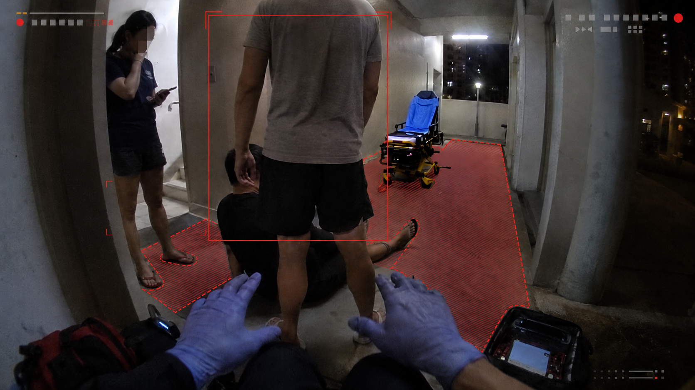

Team Details
1stSight · Joseph Poon (josephpzh@proton.me), Tze Kai Lim, Tan Yale, Lee Jiajia
Singapore Institute of Technology
SCDF-Dell Lifesavers' Innovation Challenge 2026
AI bodycam incident intelligence
1stSight is an Ops Centre incident intelligence layer: it turns SCDF bodycam feeds and location metadata into live scene maps, verified cues, source-frame timelines, handover notes, and report-ready incident records.
What It Is
The main product is the Ops Centre dashboard. For the prototype, a hands-free camera PWA simulates sampled frames and location telemetry from SCDF bodycams.
Dashboard Components
It correlates each feed, location pin, AI cue, source frame, and officer confirmation into a live incident map and exportable incident record.
2-3
bodycam feeds for demo
FEED+LOC
bodycam telemetry
8 weeks
working prototype plan
4 types
fire, medical, rescue, responder safety
EMS calls are rising
SCDF Annual Statistics 2025
2025 incident volume signals
EMS, trauma, fire
2025 incident pressure points
SCDF Annual Statistics 2025
SCDF's 2025 workload shows why bodycam intelligence should do more than stream video. The value is simple, Ops Centre should not have to watch raw video and remember everything manually.
- 257,158 EMS calls: SCDF handled 705 EMS calls daily in 2025, a 4.8% increase from 2024.
- 188,474 medical emergencies: medical-related calls formed 78.6% of emergency EMS calls.
- 40,644 trauma calls: trauma cases rose 9.1%, including falls, industrial accidents, and assaults.
- 2,050 fire calls: fire incidents remain supported alongside EMS, trauma, rescue, and responder-safety workflows.
Operational translation
from video feed to incident intelligence
EARLY
Useful context should reach Ops Centre earlier.
Bodycam frames and location become reviewable evidence instead of arriving only as verbal updates.
LOAD
Ops Centre should not need to watch every frame manually.
AI triage and map pins highlight repeated or high-risk cues so officers can focus on what changed.
RAW
Raw video should become structured incident intelligence.
1stSight links AI cues to source frames, location pins, confirmation state, timeline events, and report exports across incident types.
Problem statement
challenge fit
How might SCDF turn bodycam footage and location into usable incident intelligence across fire, medical, rescue, and responder-safety calls? Raw video gives Ops Centre visibility, but not verified incident memory. 1stSight turns selected frames into map pins, evidence, timeline events, and report-ready summaries.
Sources: SCDF Emergency Medical Services, Fire & Enforcement Statistics 2025 and Innovation Challenge 2026 kickoff brief.



Approximate scene map
bodycam location + visual cues
void deck
lift lobby
stretcher access path
Confirmed timeline
audit-ready
14:03
Medic Noor bodycam active. First medical scene frames received.
14:06
AI flags patient posture and constrained access, with evidence frame linked.
14:07
Ops Centre pins the source frame to the void deck map and marks it for the incident record.
14:08
Crowd encroachment and blocked stretcher access flagged for officer review.
14:10
Structured snapshot ready for handover, AAR, and PDF report export.
AI-suggested observations
Patient appears low to the ground. Crowd encroachment appears near medical crew, with stretcher path partially obstructed.
Medical and responder-safety cues require officer review before escalation or documentation.
Ops-confirmed handover summary
Medic Noor feed active. Blocked stretcher access confirmed after source-frame review.
Ops Centre confirmed a source-linked event for timeline and report export. No medical diagnosis made from bodycam imagery.
Bodycam + location
Sampled frames carry incident ID, responder, timestamp, connection status, incident type, and location metadata.
Scene understanding
Flag visible cues and pin them to the approximate incident map with source-frame evidence.
Incident record
Officers confirm facts, update the timeline, and export handover notes or AI-drafted reports.
Operational fit for SCDF
works before, during, and after the incident
1stSight fits into SCDF operations as an Ops Centre incident intelligence layer, not as another frontline task. Crews keep moving with hands-free capture while officers receive a source-linked map, timeline, and record.
- Capture: bodycam feeds and location metadata stream without manual tagging.
- Map: AI cues become source-linked pins on an approximate incident map.
- Confirm: an officer checks the source frame before treating it as fact.
- Record: confirmed facts feed the timeline, handover summary, and report export.
Current flow vs 1stSight
flowchart TB
subgraph current[Current bodycam workflow]
direction LR
A[Responder bodycam] --> B[Bodycam live feed]
B --> C[Raw feed reaches Ops Centre]
C --> D[Officer manually watches feeds]
D --> E[Radio notes, logs, and memory carry key observations]
end
subgraph improved[1stSight workflow]
direction LR
F[Bodycam feed + location] --> G[Near-live sampled frames]
G --> H[AI flags visual cues]
H --> I[Source-frame map pins]
I --> J[Officer confirms timeline facts]
J --> K[Handover notes + PDF report export]
end
current ~~~ improved
Feasible and safe AI architecture
secure deployment + safe AI
Dell hosts the secure Ops Centre dashboard. Gemini supports prototype frame analysis. Dell/NVIDIA remains the future deployment path. AI assists, and officers decide.
Gemini Flash
Fast review for visible scene cues such as blocked access, crowd encroachment, smoke, fire cues, and changing conditions.
Gemini Pro
Careful review for uncertain or high-impact moments, such as patient posture or responder-safety incidents.
Dell deployment
Dell Cloud Native Platform and CSC Demo Studio can deploy, secure, and evaluate the prototype.
1
Ops Centre confirms every operational fact before it enters the timeline.
2
Every AI alert keeps its source frame, timestamp, confidence, bodycam location, and responder source.
3
Summaries separate AI-suggested observations from officer-confirmed facts.
4
No medical diagnosis, facial recognition, or identity matching without explicit governance.
Decision contract
1stSight does not command responders or diagnose patients. It organises what Ops Centre already needs to see: confidence, source frame, location, timestamp, and audit trail.
Prototype rollout sequence
from working dashboard to judged prototype
1. Foundation
Role-switch prototype with responder and Ops Centre views.
2. Capture + dashboard
Hands-free camera capture, secure frame upload, responder status, feeds, location pins, scene map, and timeline.
3. AI + confirmation
Smoke, blocked access, patient posture, crowd encroachment, map pins, source frames, and officer confirmation.
4. Readiness
Audit log, degraded-feed handling, PDF report export, Dell deployment, scenario rehearsal, and reliability polish.
What the prototype proves
clear outcomes for SCDF and Dell
The prototype tests a simple idea: bodycam footage should help Ops Centre make sense of incidents, not just add more video to watch. AI suggests the visual cues, but officers review the frame and decide what enters the record.
- 2-3 feeds: show multi-incident bodycam and location views without changing frontline behaviour.
- AI cues: flag visible scene cues with source frames, timestamps, and map pins.
- Record proof: confirm, dismiss, annotate, and export a report-ready timeline.
Incremental cost view
SCDF already has bodycams and Ops Centre viewing workflows. 1stSight mainly adds inference and evidence handling.
Prototype
$500 for AI calls, storage, and hosting.
Demo extension
$10k for inference, secure hosting, and scenario testing.
The buying argument
why SCDF should care now
SCDF already cares about faster awareness and safer decisions. 1stSight gives officers a way to use bodycam footage without turning it into another screen to babysit.
What officers get immediately
clearer operations, less manual admin
Officers get a cleaner record of what crews saw, what Ops Centre checked, and what was confirmed. The dashboard does not replace judgement; it reduces the work needed to find and verify important visual information.
- Live incident map: Ops Centre sees bodycam locations, source-frame pins, and what each responder is seeing.
- Less repeated updates: officers can inspect key visual cues instead of asking crews to describe the same scene again.
- Faster live briefing: confirmed medical access issues, crowd risks, fire/rescue cues, and responder-safety events become timeline-ready updates.
- Report-ready PDF: reduce manual report writing by turning confirmed facts, timestamps, locations, and evidence links into an AI-drafted incident report.
Conclusion
1stSight turns bodycam footage and location metadata into a live incident map, verified timeline, and report-ready record.